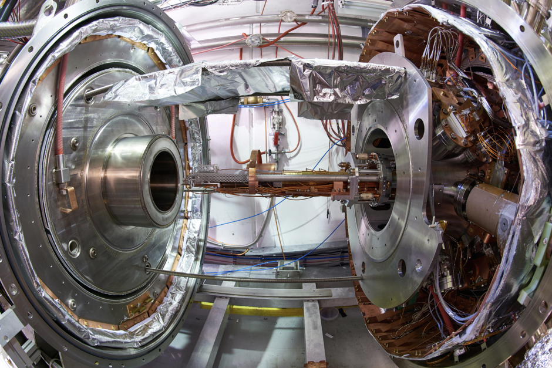

What is Antimatter
Antimatter is the opposite of normal matter. More specifically, the sub-atomic particles of antimatter have properties opposite those of normal matter. The electrical charge of those particles is reversed. Antimatter was created along with matter after the Big Bang, but antimatter is rare in today's universe, and scientists aren't sure why. To better understand antimatter, one needs to know more about matter. Matter is made up of atoms, which are the basic units of chemical elements such as hydrogen, helium or oxygen. The universe of an atom is complex, as it is full of exotic particles with properties of spin and "flavor" that physicists are only just beginning to understand. From a simple perspective, however, atoms have particles that are known as electrons, protons and neutrons inside of them. Each element has a certain number of protons in each atom: Hydrogen has one proton; helium has two protons; and so on.
Anti particles
In the heart of an atom, called the nucleus, are protons (which have a positive electrical charge) and neutrons (which have a neutral charge). Electrons, which generally have a negative charge, occupy orbits around the nucleus. The orbits can change depending on how "excited" the electrons are (meaning how much energy they have.) In the case of antimatter, the electrical charge is reversed relative to matter, according to NASA. Anti-electrons (called positrons) behave like electrons but have a positive charge. Antiprotons, as the name implies, are protons with a negative charge. These antimatter particles (which are called "antiparticles") have been generated and studied at huge particle accelerators such as the Large Hadron Collider operated by CERN (the European Organization for Nuclear Research), NASA stated. "Antimatter is NOT antigravity," NASA added. "Although it has not been experimentally confirmed, existing theory predicts that antimatter behaves the same to gravity as does normal matter." 
Where is it?
Antimatter particles are created in ultra high-speed collisions. In the first moments after the Big Bang, only energy existed. As the universe cooled and expanded, particles of both matter and antimatter were produced in equal amounts. Why matter came to dominate is a question that scientists have yet to discover. One theory suggests that more normal matter was created than antimatter in the beginning, so that even after mutual annihilation there was enough normal matter left to form stars, galaxies and us.
Antimatter Spaceship?
When antimatter particles interact with matter particles, they annihilate each other and produce energy. This has led engineers to speculate that antimatter-powered spacecraft might be an efficient way to explore the universe. NASA cautions there is a huge catch with this idea: it takes about $100 billion to create a milligram of antimatter. While research can get by on a lot less antimatter, this is the minimum that would be needed for application. "To be commercially viable, this price would have to drop by about a factor of 10,000," the agency wrote. Power generation creates another headache: "It costs far more energy to create antimatter than the energy one could get back from an antimatter reaction." But that hasn't stopped NASA and other groups from working to improve the technology to make antimatter spacecraft possible. In 2012, a representative from The Tauri Group told Space.com that it's possible that antimatter could be used about 40-60 years in the future. NASA created a 2010 report (with help from The Tauri Group and others) called "Technology Frontiers: Breakthrough Capabilities for Space Exploration," which detailed how a fusion spacecraft could work. The design calls for pellets of deuterium and tritium (heavy hydrogen isotopes with one or two neutrons in their nuclei, unlike common hydrogen that has no neutrons). An antiproton beam would then be beamed into the pellets, which would bash against a layer of uranium embedded inside. After the antiprotons strike the uranium, both would be destroyed and create fission products that would spark a fusion reaction. Properly directed, this could make a spacecraft move.
Antimatter Bomb?
Antimatter was a lethal weapon. Potent, and unstoppable. Once removed from its recharging platform at CERN A blinding light. The roar of thunder. Spontaneous incineration The idea that humanity might one day harness the annihilative power of antimatter for destructive purposes has a ghastly fascination and it's a central part of the Angels and Demons plot, in which a bomb containing just a quarter of a gram of antimatter threatens to obliterate the Vatican. Relax, says Rolf Landua, a physicist at CERN. There's a very good reason why nothing like that is going to happen any time soon. If you add up all the antimatter we have made in more than 30 years of antimatter physics here at CERN, and if you were very generous, you might get 10 billionths of a gram he says. Even if that exploded on your fingertip it would be no more dangerous than lighting a match. Patients undergoing PET scans have natural radioactive atoms in their bloodstreams emitting tens of millions, if not more, positrons to no ill effect Even if physicists could make enough antimatter to build a viable bomb, the cost would be astronomical. “A gram might cost a million billion dollars,” says Landua. “That’s probably more than Barack Obama wants to invest right now.” Frank Close, a particle physicist at the University of Oxford, points out the time problem, too. “It would take us 10 billion years to assemble enough anti-stuff to make the bomb Dan Brown talks about,” he says. If that seems reassuring, unfortunately the same kind of reasoning does for antimatter as a clean, green energy source. Maybe it would work if there were lumps of antimatter that nature had spent 15 billion years making for us,” says Close. As it is, we would have to make them one anti-atom at a time, which costs far more energy to make it than we would get out of it – about a billion times more, says Landua. That’s not to say we can't harness antimatter in new ways. In 2007, physicists David Cassidy and Allen Mills of the University of California, Riverside, made the first molecules comprised of more than one positronium atom. Positronium atoms quickly annihilate into high-energy gamma rays, so pack lots of them together, and it should be possibly to get them annihilating and emitting light in synchrony – creating an enormously high-powered “gamma-ray annihilation laser” that could be used to image objects as small as atomic nuclei, or to set off nuclear fusion in reactors.